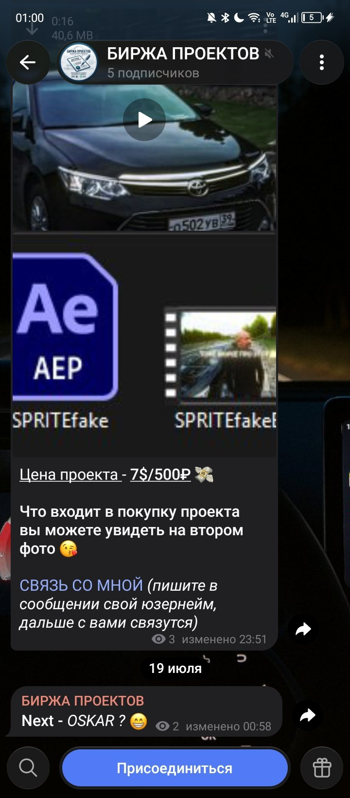
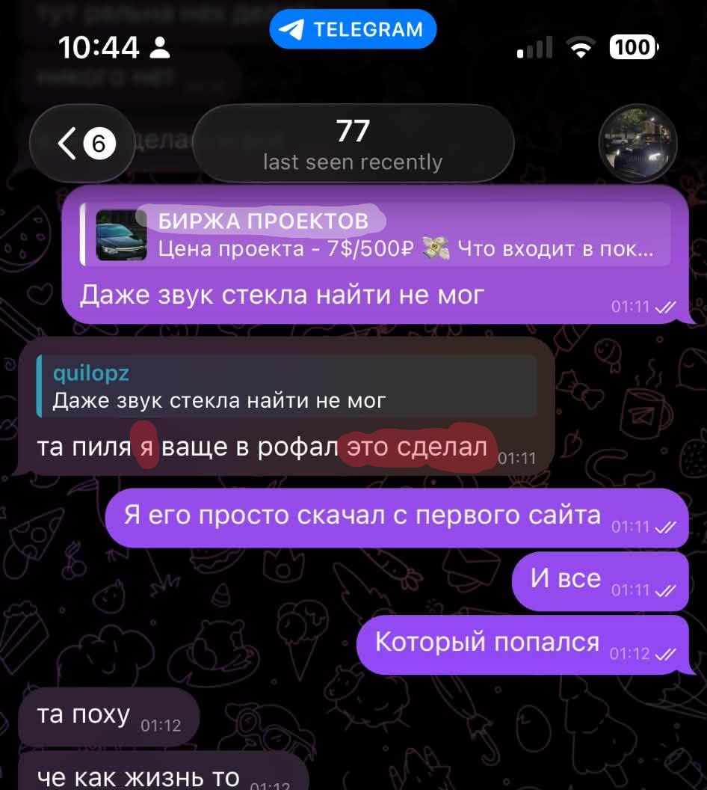
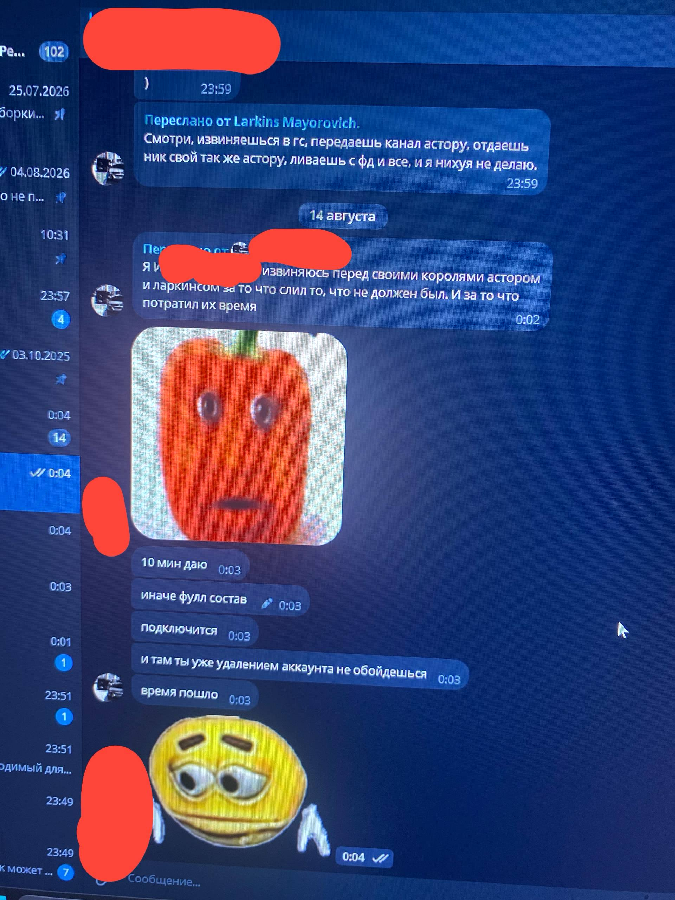
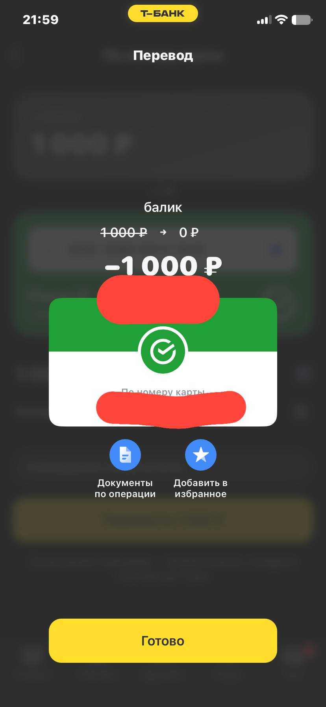
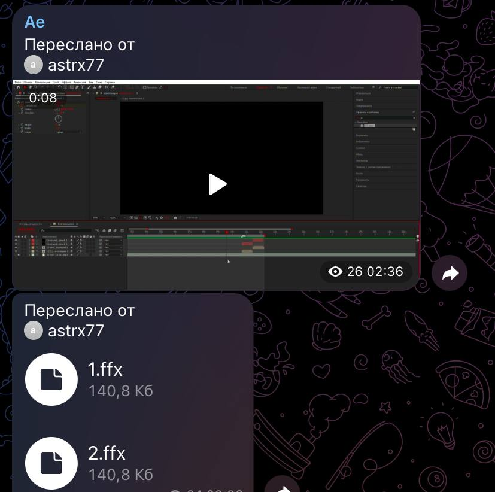
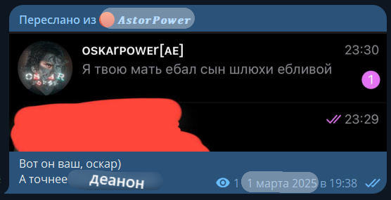
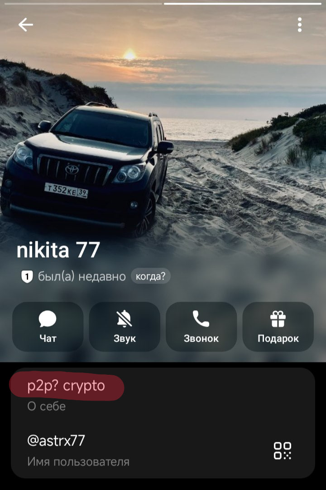
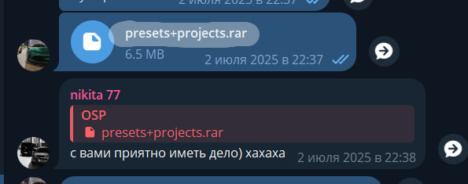
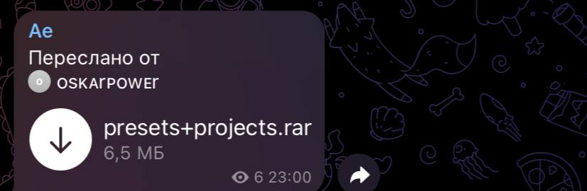
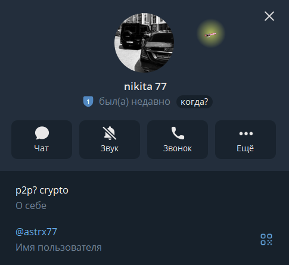

Astor
Полный материал • факты • дополнительные материалы
Всем присутствующим известен персонаж под псевдонимом Astor. Подаёт себя как компетентный специалист, демонстрирует рост в монтаже, реализует проекты. Вопрос лишь в том, чьи именно.
Astor / by_kalinin / zotdem — Никита. Уроженец и действующий житель Калининградской области. В распоряжении имеются: точный населённый пункт, возраст, полное ФИО, фотоматериалы. В случае дальнейших неосмотрительных действий с его стороны объём обнародованной информации будет расширен.
Ранее указанное лицо уже фигурировало в инцидентах, связанных со сливами и реализацией чужого контента. Ниже — исчерпывающие факты.
ФАКТ ПЕРВЫЙ
В недавнем времени зафиксировано появление Telegram-канала «Биржа Проектов». Неустановленное лицо систематически копировало эдиты известных авторов — в частности, работы Спрайта и Оскара.
Оскару Астор заявил о своей непричастности, сославшись на незнание того, кто стоит за данным каналом.
Спрайту — признал авторство. Когда последний потребовал удалить скопированную работу, Астор подтвердил: канал принадлежит ему, это его рук дело.

«Доказательств нет»
Астор заявляет: «Доказательств, что это реально мой канал, ни у кого нет».
Доказательства есть.
В распоряжении авторов поста — скриншоты, в которых Астор прямо говорит: биржа принадлежит ему. Не «я второе-третье лицо». Не «я не в курсе, кто это». А прямое признание авторства.

Более того — это же признание он озвучивал Спрайту лично. Когда его просили удалить скопированные работы — он не отрицал. Он подтвердил. И удалил.
Это не забывчивость. Это осознанная тактика. Сначала — признать под давлением. Потом — когда шум улёгся — включить отрицание. В расчёте, что скрины не сохранились, свидетели разойдутся, а «слово против слова» — его любимое поле.
Расчёт не оправдался.
ФАКТ ВТОРОЙ
Одним из первых о существовании «Биржи» узнал Реликс. Первым, кому Астор признался лично, стал Рояловский — постоянный клиент, которому было предложено приобрести доступ.
После покупки Рояловский намеревался обменять один из своих проектов с эдитором Монтана на проект с «Биржи» — и скидывает ему готовый эдит. Огласка канала минимальна — круг посвящённых крайне узок. Однако Монтана скидывает информацию Астору — и начинается докс при непосредственном участии Ларкинса. Возникает закономерный вопрос: откуда Монтана знал о «Бирже»?
Итог: Рояловский покинул ФД.

Отдельная ситуация
Отдельного разбора заслуживает эпизод, исчерпывающе характеризующий методы работы Астора.
28 июля у Рояловского был день рождения. Астор, узнав об этом, выступил с предложением: тысяча рублей — и он дарит игру в Steam. Перевод был совершён.
Дальнейшее — классическая схема подмены обязательств.
Вместо обещанной игры Астор выдаёт проект Оскара. На возражение Рояловского — «он мне не нужен, у меня всё оттуда есть» — следует новое обещание: доступ к новым эффектам. Первым. До всех.
Проходит две недели. Эффекты действительно выходят. Рояловский обращается за обещанным. Ответ:
Спустя несколько дней Астор загружает пять собственных проектов с этими эффектами в приватку.
Комментарий излишен.
Стоимость приватки, которую Рояловский на тот момент приобретал уже дважды, — 500 рублей. Итоговая сумма, полученная Астором за обещания, — 1000 рублей. Без игры. Без эффектов. Без каких-либо обязательств с его стороны.

На обвинения Астор отвечает дословно следующее:
Красиво сказано. Убедительно. Одна проблема: факты говорят об обратном.
Рояловский поясняет ситуацию как есть:
Переводим с языка обещаний на язык фактов.
Астор доксит Рояловского — своего постоянного клиента. Затем выкидывает его из приваток, доступ к которым был оплачен. И предлагает: хочешь вернуться — плати заново.
Тысяча рублей, которую Астор называет «подгоном басятским», по факту остаётся у него. Доступы, за которые заплачено, — аннулированы. Игры — нет. Деньги — не возвращены.
И после этого — «я никогда никого на деньги не кидал»
Классическая схема: сначала отнять оплаченное, потом сослаться на то, что «деньги никто не отнимал». Формально — да, перевод был добровольным. По сути — человек остался и без доступа, и без денег.
Это и есть кидок. Просто оформленный так, чтобы можно было делать невинное лицо.
Причина докса:
Отдельно стоит зафиксировать, с чего вообще начался докс Рояловского. Вопреки попыткам Астора выставить себя пострадавшей стороной — речь не шла о сливе.
Суть проще, чем кажется.
Рояловский показал видео готового проекта с «Биржи». Без упоминания Астора. Без раскрытия того, кто стоит за каналом. Без демонстрации исходников.
Просто эдит-ролик. Просто доказательство того, что у него есть доступ.
Но проблема в другом: сам проект и видео — рук дело Астора. Он узнал своё творение мгновенно. И понял: если Рояловский показывает материал — значит, «Биржа» перестаёт быть тайной. Значит, цепочка тянется к нему.
Показательно и то, как он это преподнёс. В его версии — «Рояловский хотел слить проект с приватки». Красиво. Благородно. Жертва защищает своё. Но реальность другая: никакого слива не было. Был только ролик, который Астор сам же и сделал. И который он хотел оставить в тени.
Вместо того чтобы решить вопрос словами, Астор поступил так, как поступает всегда, — начал докс.
Главный вопрос
И вот тут возникает закономерный вопрос: какого права Астор вообще решил, что ему позволено такие движения?
Сначала он создаёт «Биржу» и копирует чужие эдиты. Само по себе копирование — не преступление. Но есть нюанс: все эдиты там собраны на чужих пресетах. Это просто обёртка. Витрина из чужого труда, за который он не платил и разрешения не спрашивал.
Затем он продаёт доступ к этому. Берёт деньги за то, что ему не принадлежит.
А после — доксит человека за то, что тот показал видео с его же незаконного детища.
Гениально
То есть сначала — нарушить. Потом — монетизировать. А потом — наказать того, кто случайно поднёс фонарь к этой схеме.
И ведь он искренне считает себя правым. В этом вся суть:
А КАК ВЫ СЧИТАЕТЕ, ДОКСИТЬ ЧЕЛОВЕКА ЗА ТО, ЧТО ОН ПОКАЗАЛ ВИДЕО, — ДАЖЕ ЕСЛИ С ПРИВАТКИ, — ЭТО АДЕКВАТНАЯ ПРИЧИНА?
ФАКТ ТРЕТИЙ
Астор приобрёл пак проектов у Оскара — и незамедлительно выставил его на продажу в собственном магазине. В ассортименте, помимо указанного пака, присутствуют: проекты и паки Оскара, шейки Спрайта, а также иные материалы, созданные другими авторами и не имеющие к Астору никакого отношения.
Отдельно — по шейкам Спрайта. То, что они продаются у Астора, — не домысел. Это видно наглядно. Видео с демонстрацией имеется, ознакомиться можно при желании.
Вопрос авторства здесь не стоит в принципе: шейки создавал не Астор. Он их не разрабатывал, не дорабатывал, не получал разрешения на продажу. Он просто взял чужое — и поставил ценник.
И да, он попытается оправдаться в своём стиле: «я не сливал в магазин, я продавал только лично».
Какая разница?
Лично, в магазине, через «Биржу», из-под полы — суть от этого не меняется. Чужой материал ушёл за деньги. Автор об этом не знал. Разрешения не давал. Доли не получал.
Это не бизнес. Это перепродажа краденого.
Способ продажи — деталь. Факт продажи — преступление.

ФАКТ ЧЕТВЁРТЫЙ
Оскар прекратил общение с Астором по причине слива ряда своих эффектов. Реакция Астора показательна: вместо признания — обида. Вместо диалога — тёмные схемы.
Астор создал фейковый аккаунт, визуально полностью повторяющий оригинальный профиль Оскара. С данного аккаунта от имени Оскара было отправлено сообщение:
Деталь, известная каждому, кто близко знал Оскара — Маралесу, Хельсингу, Трояну и другим: Оскар не позволял себе оскорблений просто так. Никогда. Ни в чей адрес. Тем более — в подобной форме. Однако клевета сработала: часть эдиторов в неё поверила.
В реализации данной провокации также участвовал небезызвестный Ларкинс. Конфликт был урегулирован при посредничестве Трояна — но факт остаётся фактом: Астор системно использует фальсификации и манипуляции как инструмент давления.

ФАКТ ПЯТЫЙ
Уровень эдитов, представленных в «Бирже» — в частности, работ Оскара и Спрайта, — на данный момент способен воспроизвести только один человек: Астор.
ФАКТ ШЕСТОЙ
В канале реализована оплата в рублях и USDT через p2p. Данному методу Астор обучился в ходе сотрудничества с Оскаром — именно Оскар первым продемонстрировал ему механику криптобиржи. Показательно: в ФД никто не ведёт расчёты через крипту, все работают исключительно за рубли. При этом в описании профиля Астора прямо указано: «p2p? crypto».

ФАКТ СЕДЬМОЙ
Пак Оскара был слит. Показательная деталь: единственным покупателем данного пака являлся Астор.
Астор переводит стрелки: «Канал АE — это Рояловского канал с пресетами».
Допустим. Какое отношение канал Рояловского имеет к тому, что Астор копировал чужие работы и продавал к ним доступ, слил пак Оскара?
Никакого.
Это классический приём — «а у него самого рыльце в пушке». Перевести фокус с себя на оппонента. Заставить всех обсуждать не сливы Астора, а канал Рояловского.
Не выйдет.
Рояловский может быть кем угодно и точно не ангел. Но «Биржу» создал не он. Копировал чужие эдиты не он. Продавал доступ к чужому не он. Доксил за видео не он.


РЕЗЮМЕ

Перед вами — не эдитор. Перед вами — перекупщик, манипулятор и человек, для которого не существует ни авторского права, ни элементарных договорённостей, ни чужой репутации.
Он врёт авторам в лицо. Он сливает то, что покупал. Он клевещет, фабрикует фейки и втягивает в свои схемы тех, кто имел неосторожность ему довериться. Он продаёт чужое, выдавая за своё. Он обманывает постоянных клиентов. Он доксит тех, с кем ещё вчера работал.
Каждая сделка с Astor — это риск. Не сделка, а лотерея, в которой вы в любом случае останетесь в проигрыше: потеряете деньги, репутацию или материалы.
Обходите стороной.
Не покупайте. Не сотрудничайте. Не вступайте в диалог. Любое взаимодействие с данным лицом — осознанное принятие его правил игры, в которых он всегда выигрывает за ваш счёт.
ОЖИДАЕМАЯ РЕАКЦИЯ
Мы отдаём себе отчёт в том, что последует за данной публикацией. Стандартный набор Астора и его окружения, в частности Ларкинса, известен заранее: угрозы, попытки докса, оскорбления, возможные сливы. Это не импровизация — это отработанная схема. Так они реагируют на всех, кто встаёт у них на пути.
Пусть попробуют.
Каждая их угроза, каждый слив, каждая попытка давления — лишь дополнительное подтверждение всего, что изложено выше. Им нечего предъявить по существу, поэтому в ход идёт то, что они умеют лучше всего: запугивание и грязь.
Мы к этому готовы. Более того — мы этого ожидаем.
И когда это произойдёт — вы сами увидите, кто перед вами. Без наших комментариев.
Распространите этот пост. Чем шире огласка — тем меньше у Астора пространства для манёвра.
Данный канал создан совместно Спрайтом и Оскаром:
👤 Спрайт — @Im_Sprite
👤 Оскар — @OskarPower
В дальнейшем здесь будут публиковаться аналогичные ситуации, связанные с Пэловским комьюнити.
Берегите себя и свои проекты.